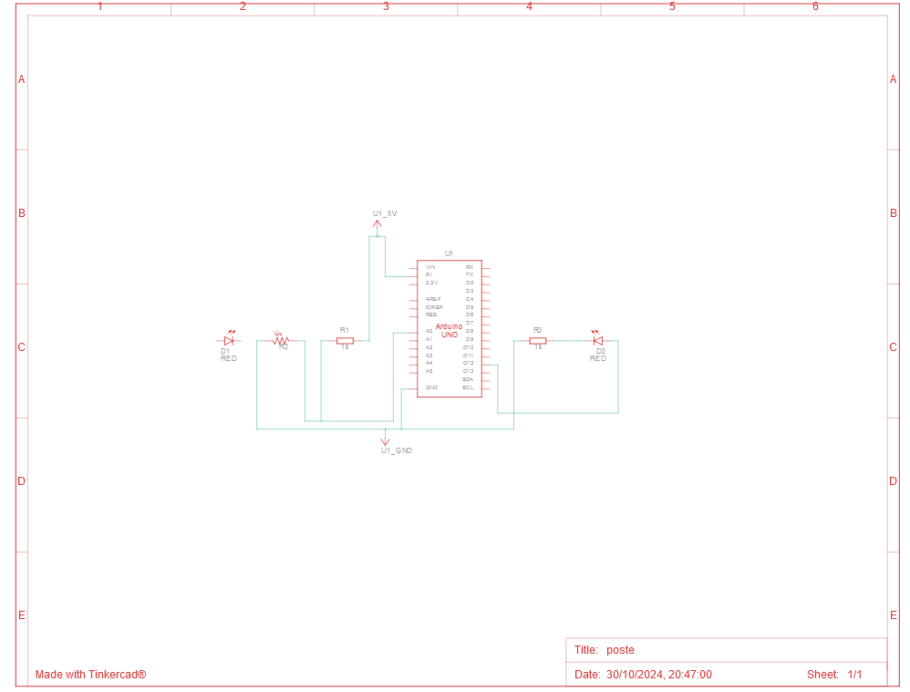

Poste com LED Simples
Descrição
Este projeto é um poste simples desenvolvido para demonstrar o funcionamento de um sinal de iluminação (irá ser feito um poste como demonstração). Ele foi criado utilizando o Tinkercad, uma plataforma online para prototipagem eletrônica.
Link do Projeto
Você pode acessar o projeto diretamente através do link abaixo:
Poste com LED Simples no Tinkercad
Características
- Codificação em Blocos: A versão do poste utiliza uma interface de codificação em blocos, facilitando o entendimento do funcionamento e lógica por trás do projeto.
- Componente Utilizado: O projeto utiliza um LED para representar a iluminação do poste.
- Interatividade: A simulação permite observar como o LED muda de estado, imitando o funcionamento real de um poste de iluminação.
Como Usar
- Acesse o link do projeto.
- Explore a interface de codificação em blocos para entender a lógica por trás do funcionamento do poste.
- Você pode modificar o código e testar diferentes sequências de iluminação.
Materiais
| Quantidade | Descrição |
|---|---|
| 1 | Arduino Uno R3 |
| 1 | LED |
| 2 | Resistor 1 kΩ |
| 1 | Fotorresistor |
Esquema do Projeto

_